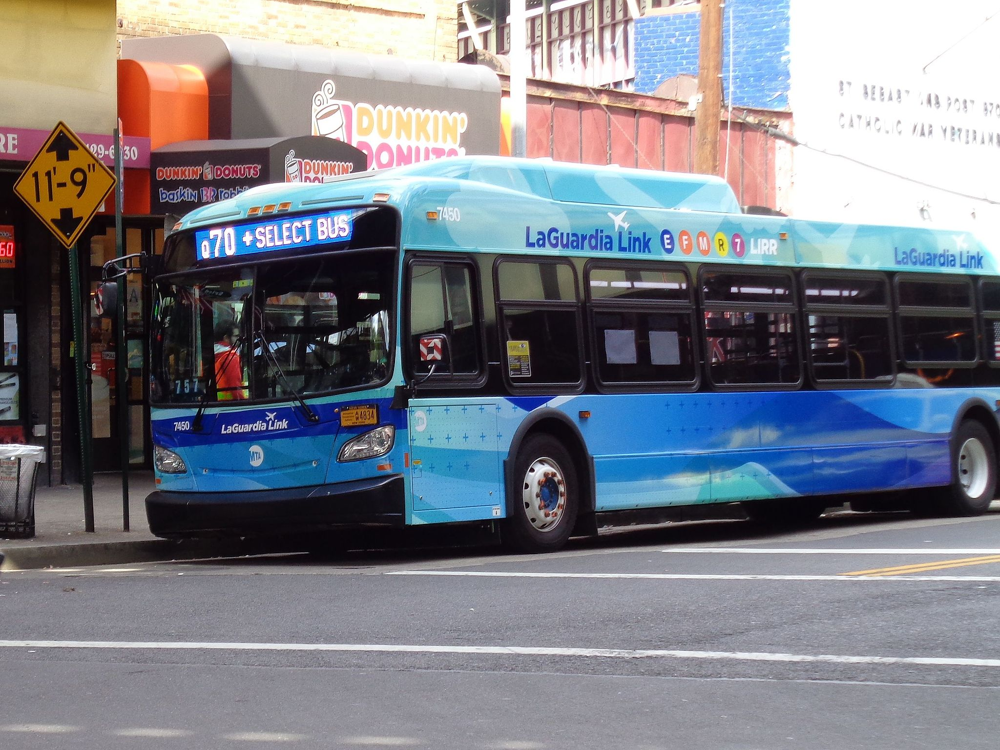
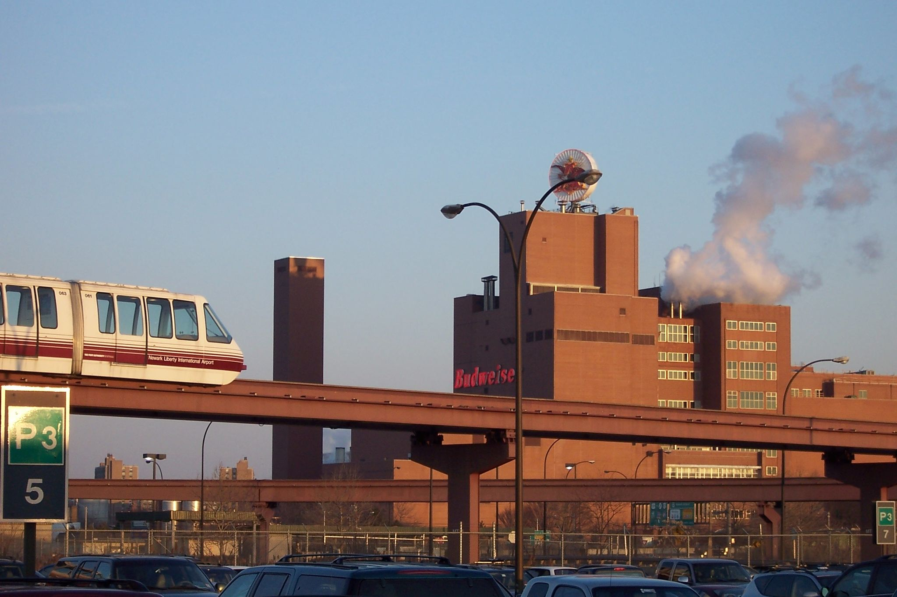

Due to circumstances beyond my control I found myself on a flight to LaGuardia (LGA) the other day, but needing to get back to Newark Liberty (EWR) to retrieve my car. LGA was terra incognita to me but I knew that crossing Manhattan via to reach New Jersey is a fool’s errand. I decided against the various van shuttles and used public transport. The only thing I knew about LGA going in is that it has no direct subway service, although it has been proposed. In the end, I used a combination of a bus, a subway, a train, and a people mover. On a good day it’ll take you an hour and 45 minutes and cost $15.
Bus

I chose the Q70, because it offered the quickest access to Midtown via the Roosevelt Avenue/Jackson Heights station. The MTA makes this pretty easy on you. As you’re walking out of LGA you see various signs directing you to the “Bus to Subway.” There are several MTA express buses operating out of LGA to various destinations:
- The M60, which runs west into Harlem for a connection with the Metro-North Railroad at 125th Street and various subway services.
- The Q70, which runs south into Queens for a connection with the Long Island Rail Road at Woodside and various subway services.
If you have a MetroCard this is easy. There are vending machines inside LGA to buy a card or refill it. Outside at the bus pickup area there are ticketing machines for the various services. It’s proof-of-payment: you insert your card, it debits the standard fare ($2.75) and you get a receipt. There was an MTA worker aboard the bus but our receipts weren’t inspected.
You have a valid transfer with this purchase, which I discovered when I swiped through the gates at Roosevelt Avenue/Jackson Heights and went down to catch an E. I took an E because it’s familiar to me and it’s cheap. The Long Island Rail Road at Woodside is faster, but it’s more expensive and I haven’t taken it before (shame).
The bus circles through all the terminals at LGA before running nonstop to Roosevelt Avenue/Jackson Heights via the Grand Central Parkway. This does put you at the mercy of traffic; it’s unavoidable. In rush-hour traffic on a very rainy day it took 23 minutes. Roosevelt Avenue/Jackson Heights is a large station and there appeared to be plenty of shops and restaurants in the immediate vicinity.
Subway
The E runs express through Queens and Manhattan before dumping you off at Pennsylvania Station. On a congested day this took 37 minutes; normally it would take 21-25. The E gives you some excellent options: right before Penn Station it stops at 42nd Street with a direct connection to the Port Authority Bus Terminal, should you wish to try your hand at one of the airport bus shuttles. If you stay on the E to the World Trade Center (another 5-10 minutes) you can take PATH to Newark Penn or the Hoboken Terminal.
Getting off the E at Penn, you follow a maze of twisty passages, all alike, to reach the New Jersey Transit (NJT) platforms. I’m convinced that this maze rearranges itself every time I visit. Numerous NJT services stop at the Airport; departure boards in Penn indicate them with an airplane symbol. During the day you can expect a train every 15-20 minutes.
Train

NJT trains are unreserved; tickets are sold in vending machines on the NJT concourse. One-way from Penn to EWR is $13/person; this includes a surcharge for using the EWR station. Tickets are inspected aboard the train. With EWR, as with Secaucus, you will need your ticket to exit the station.
It’s a 25-minute trip from New York Penn to EWR; the train will also stop in Secaucus and Newark Penn. At Newark Penn there’s a bus that runs to the airport. I’ve never taken it, but if you feel like adding a mode of transport it’s cheaper than continuing to the airport station and it might be faster for a reason I’m about to discuss. If you chose to take PATH from the World Trade Center you’d want to take this bus in lieu of NJT.
When you get off at the EWR station you go up the stairs, swipe through a fare gate with your NJT ticket, and make your way to the Newark AirTrain. This is the weakest link in the process. It’s an airport circulator serving the station, various parking lots, and all three terminals. It’s old and prone to breakdowns. It’s vulnerable to bad weather and has to be closed when there’s high wind, in which case it’s replaced by an infrequent bus. It’s also just slow, even when it’s running.
Anyway, if the AirTrain is running, it’ll take 10-15 minutes to reach the terminals. Catch a flight. Retrieve your car. Ponder the choices that led you to this moment.